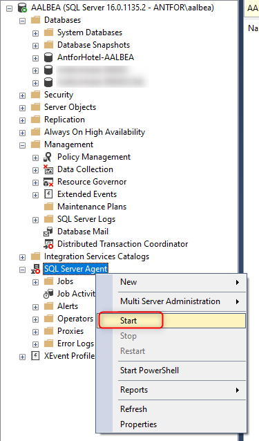
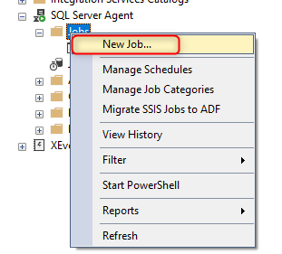
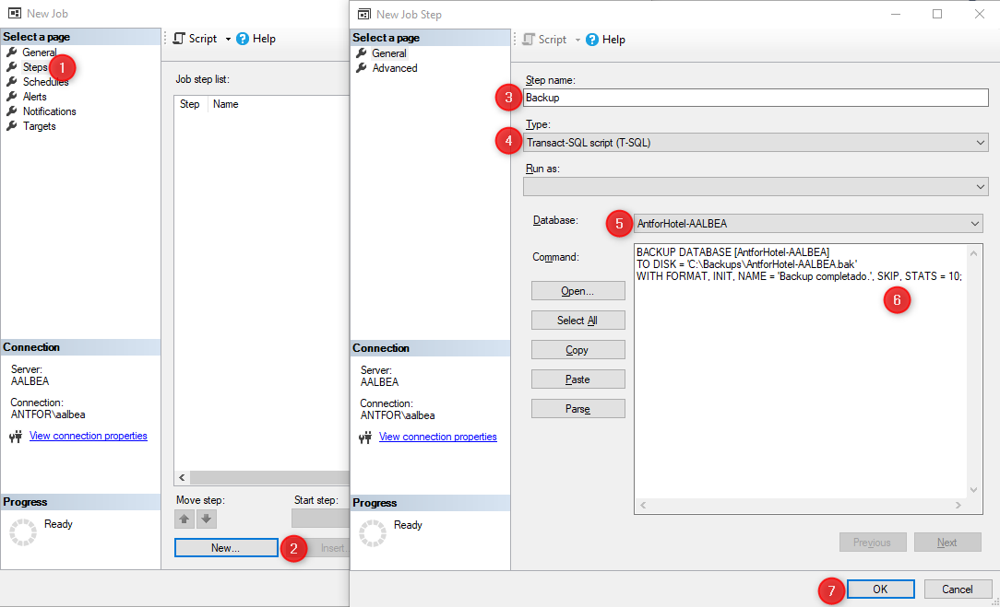
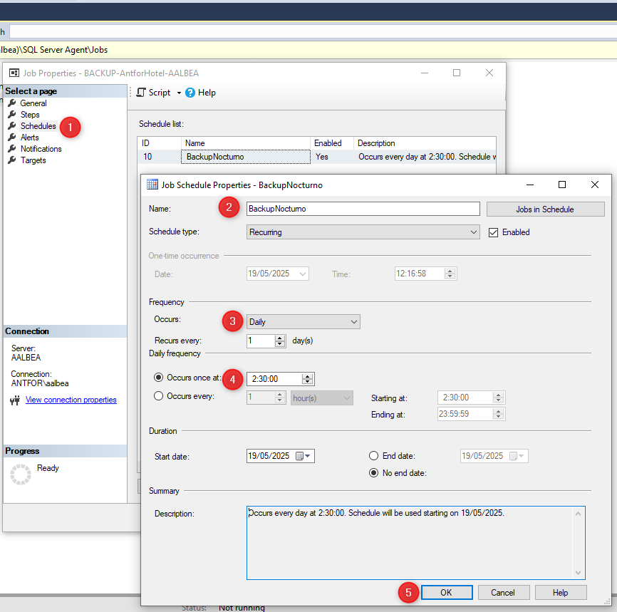
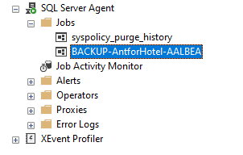
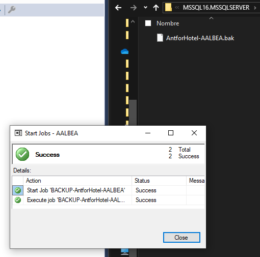

0. Descripción de la empresa
La empresa pertenece al sector del desarrollo de software orientado a cadenas hoteleras. La organización se estructura en: Dirección, Administración, IT, Desarrollo, Consultoría y Soporte. Actualmente, formo parte del departamento de IT.
1. Mi puesto
Técnico de IT
¿Qué se esperaba de ti? ¿Cuáles eran tus funciones al inicio?
Se esperaba que asumiera las tareas y responsabilidades relacionadas con la administración de sistemas de la empresa, así como ofrecer soporte en los conflictos entre nuestro software (Avalon) y los sistemas de los clientes (infraestructura, conectividad, despliegue, impresión, etc.).
¿Qué pensabas de la empresa al principio (miedo, incertidumbre, presión, emoción...)? ¿Y ahora? ¿Ha cambiado algo?
Desde el principio me pareció un lugar con buen ambiente de trabajo, y hasta el día de hoy sigue siendo así.
¿Piensas lo mismo de la empresa?
Sí, mi opinión se mantiene desde el inicio.
¿Haces ahora lo mismo que el primer mes?
No, actualmente tengo responsabilidades mayores.
2. 📄 Documentación: Crear trabajos de backup en SQL Server
📌 Requisitos previos
- Tener instalado SQL Server y SQL Server Management Studio (SSMS).
- Contar con privilegios de administrador o permisos suficientes para crear trabajos y realizar copias de seguridad.
- Asegurarse de que el servicio SQL Server Agent esté habilitado (necesario para programar trabajos).
Crear trabajo de backup desde SSMS
1. Abrir SQL Server Management Studio
- Conectarse al servidor correspondiente.
2. Activar SQL Server Agent
- Asegurarse de que el servicio SQL Server Agent esté iniciado (visible en el panel del Object Explorer).

3. Crear el Job
- Navegar a:
SQL Server Agent ➝ clic derecho en Jobs ➝ New Job...

4. Configurar el Job
- Name: Asignar un nombre al trabajo.
5. Crear un Paso (Step)
- Ir a la pestaña Steps ➝ clic en New...
- Step name:
BackupPaso1
- Type:
Transact-SQL script (T-SQL)
- Database: Seleccionar la base de datos a respaldar.
- Command:
BACKUP DATABASE [TuBaseDeDatos]
TO DISK = 'C:\ruta\TuBaseDeDatos.bak'
WITH FORMAT, INIT, NAME = 'Backup completo', SKIP, STATS = 10;

6. Programar el Job
- Ir a la pestaña Schedules ➝ clic en New...
- Name:
HorarioDiario
- Configurar la frecuencia (diaria, semanal, etc.) y la hora de ejecución.
- Clic en OK

7. Finalizar
- Clic en OK para guardar el trabajo.
Consejos útiles
- Guarda las copias de seguridad en un disco externo o una ubicación de red cuando sea posible.
- Verifica periódicamente que los backups se estén ejecutando correctamente.
- Considera realizar backups diferenciales y de logs en bases de datos críticas.
Comprobación
Puedes ejecutar el trabajo manualmente desde SSMS:
- En el Object Explorer ➝
SQL Server Agent ➝ Jobs
- Clic derecho sobre el trabajo ➝
Start Job at Step...


3. Conclusión
¿Te quedas en la empresa?
Sí, continuaré en la empresa tras la finalización del contrato de FP Dual.
¿Quieres quedarte? Si es así, ¿cuáles son tus funciones actuales?
Sí, deseo continuar. He tenido la suerte de encontrar un entorno donde aprendo mucho y el ambiente es inmejorable.
Actualmente, mis funciones incluyen:
- Realización y mantenimiento de backups (SQL, MV y archivos).
- Asistencia técnica a compañeros.
- Montaje de entornos para clientes en Azure.
- Automatización de procesos.
- En general, todo lo relacionado con las tareas de un Técnico de IT.
¿Te van a mejorar el salario o las condiciones?
Sí, me han confirmado dos mejoras salariales. Estas vienen acompañadas de un incremento en el nivel de responsabilidad.